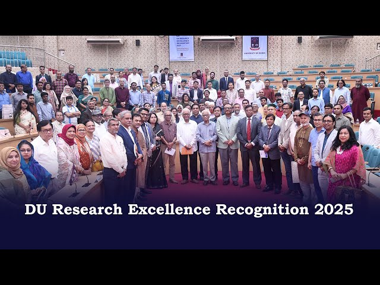
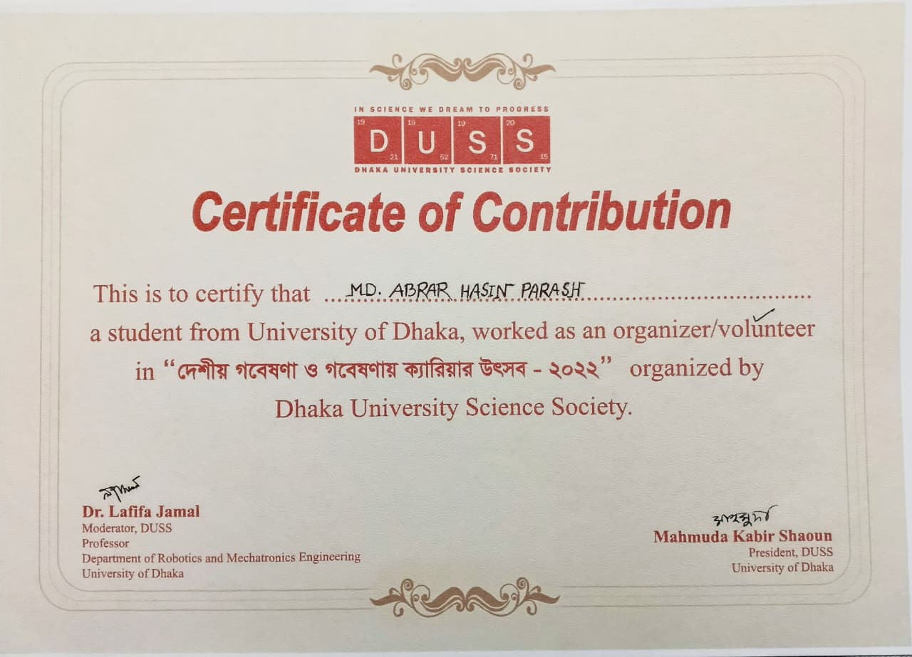
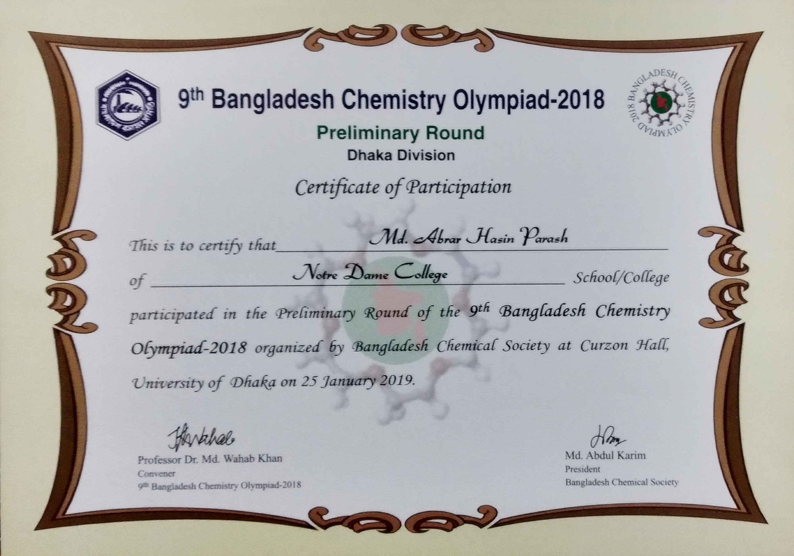
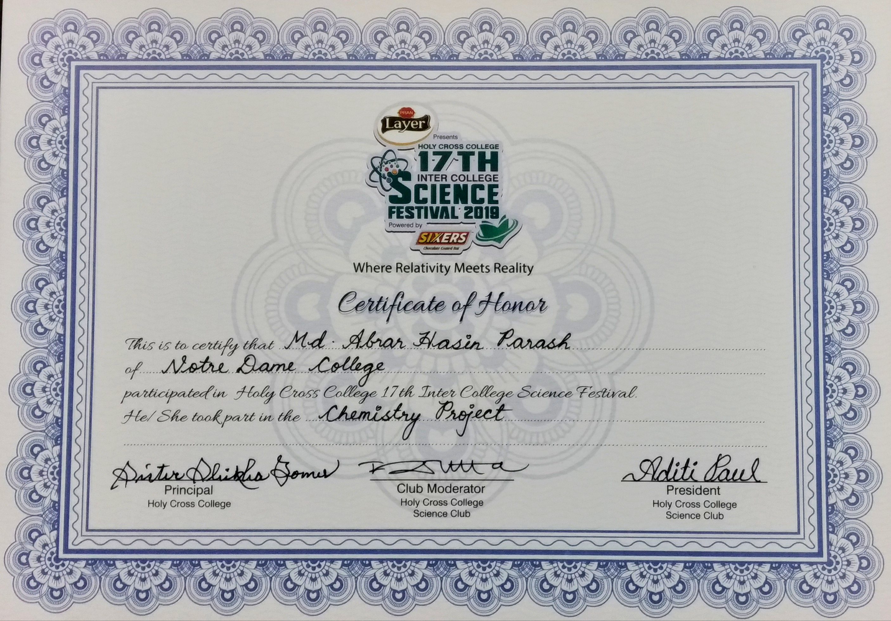
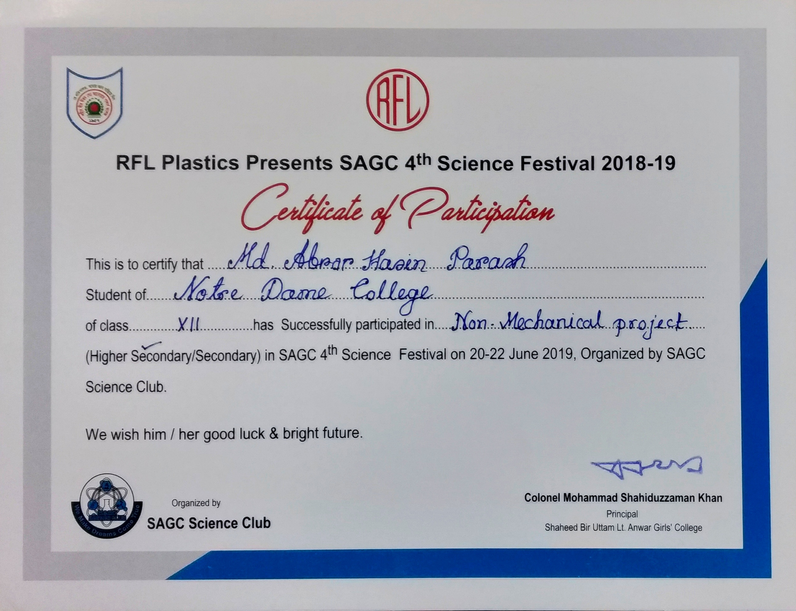

Md Abrar Hasin Parash
Life Science Researcher & Educator
.jpg)
Awards and Certificates
Recognitions, honors, and certifications — chronologically ordered, most recent first (left to right, top to bottom).

Internship Certificate
2026 · Business Development Department, SDG 360
Fundamentals of Publishing
2026 · Elsevier Researcher Academy

DU Research Excellence Recognition 2024
2025 · University of Dhaka
Fundamentals of Manuscript Preparation
2025 · Elsevier Researcher Academy
IT for All
2025 · Academic Affiliation
Python and Data Science
2025 · Academic Affiliation
Writing Skills
2025 · Elsevier Researcher Academy

Participation in "Ramadan, the month of triumph of Islam"
2025 · Rose Academy
Publication Certificate
2023 · International Journal of Advanced Multidisciplinary Research and Studies

Certificate of Volunteering
2022 · Dhaka University Science Society (DUSS)

Participant Certificate - 9th Bangladesh Chemistry Olympiad
2019 · Bangladesh Chemical Society

Participant Certificate - HCC Science Fest 2018-19
2019 · Holy Cross College Science Club

Participant Certificate - SAGC Science Fest 2018
2018 · SAGC Science Club